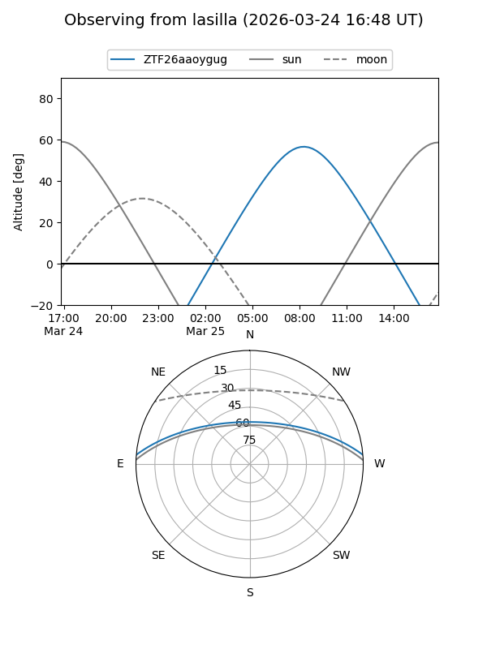
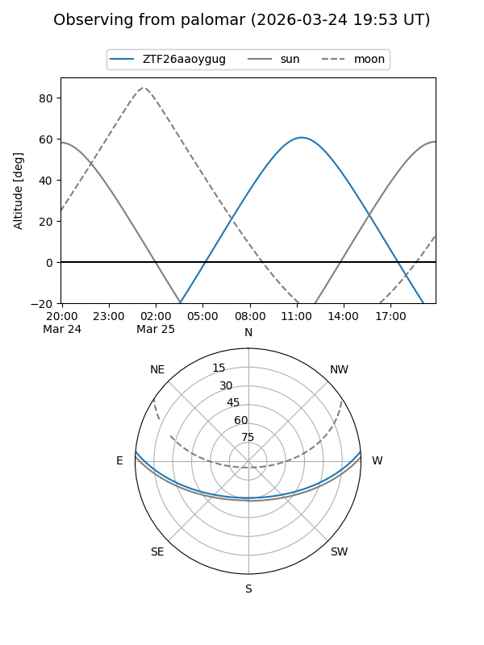

ZTF26aaoygug
Target ZTF26aaoygug at 2026-03-25 13:04
Aliases and brokers:
FINK: link
Lasair: link
ALeRCE: link
alt names
ZTF26aaoygug (ztf,fink_ztf)
Coordinates:
equatorial (ra, dec) = 235.6219,+4.15568
equatorial (HMS+DMS) = 15:42:29.25,+04:09:20.44
galactic (l, b) = (11.2380,+43.21462)
Flags:
Photometry:
last ztfg=19.10, ztfr=18.52
1 ztfg, 1 ztfr detections
Lightcurve
Visibility


Additional plots